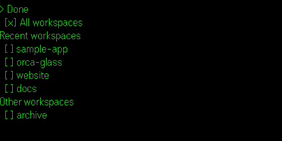
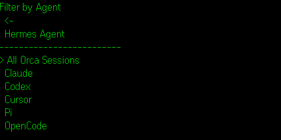
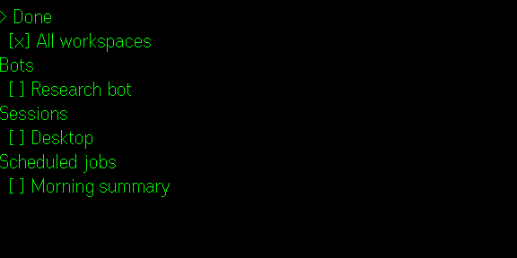
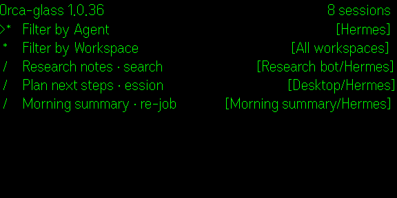

Read your Orca + Hermes sessions. Speak your next step.
Eight native simulator captures using fictional data and the unchanged 1.0.36 app renderer. Each upload PNG is 576 × 288 pixels, composited onto black. No real conversations, credentials, usage or microphone audio appear.
Current description · Listing statusPublic 1.0.36 is live. These new screenshots are ready for manual upload. The corrected privacy PDF is still separate from the portal attachment.




Read your Orca + Hermes sessions. Speak your next step. Orca Glass connects G2 glasses to agents running in Orca on your Windows PC, and to Hermes Agent. Read conversations, see working/waiting status and the model, and review spoken replies before sending. Version 1.0.36: - Filter by agent: Hermes Agent, or All Orca Sessions / Claude / Codex / other Orca agents. Hermes and Orca sessions stay separate. - Filter by workspace: Orca shows recent workspaces first, then the rest; Hermes shows Bots, Sessions and Scheduled jobs. - Conversations open at the start of the latest reply. Nine rows per page; swipe for pages, swipe down on the last page to refresh. One status row shows state, model and page, e.g. /Waiting Opus5.5 Pg7/8. - Hold to open a full-screen voice page that is already listening; release to review, click to send, double-click to cancel. Whisper runs locally on your PC and ignores silence. - For numbered prompts, click for choices or speak an option number, then confirm. - View Codex, Claude and Cursor usage; toggle resets between computer time, phone time and time remaining. - Start Codex in an existing Orca workspace. Requires G2, the Even Realities Android app, Orca and the companion Windows bridge. The packaged connection targets a configured private PC over Tailscale; arbitrary-PC setup is not yet self-service. Agents run on your PC, not the glasses. English only. Try the demo without a PC. Source/setup: https://github.com/eugene8080/orca-glass/tree/windows-android-codex Independent Windows/Android fork of 2ero20ne's Orca Glass under MIT. Original: https://github.com/2ero20ne/orca-glass